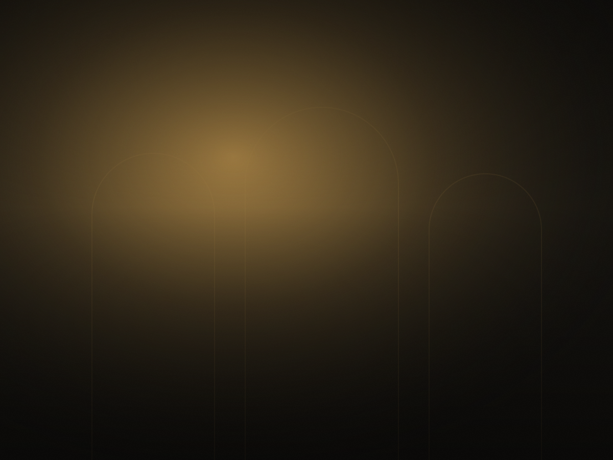
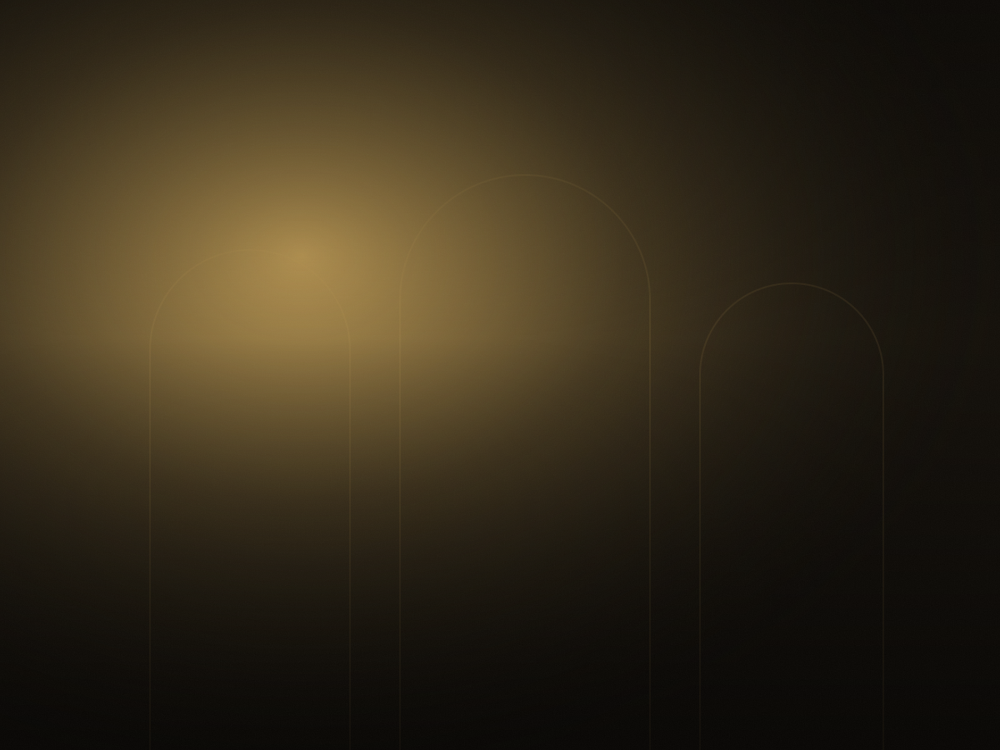
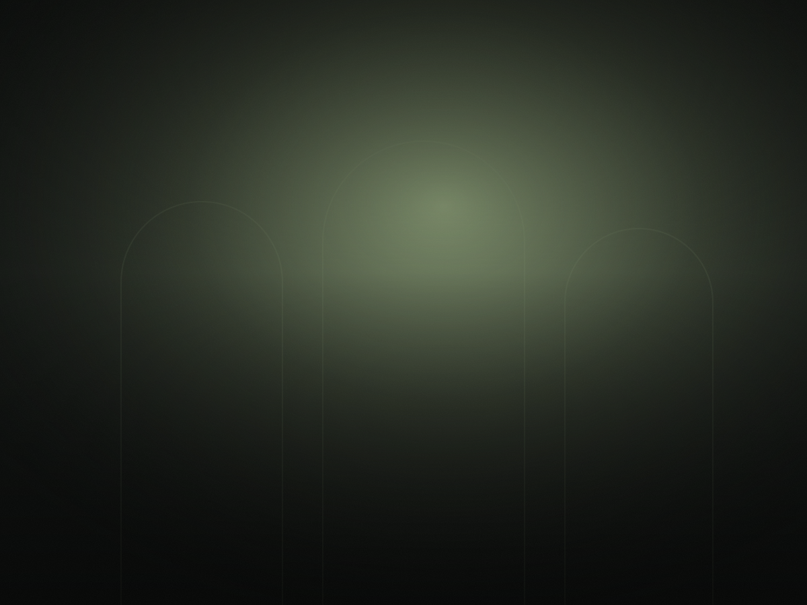
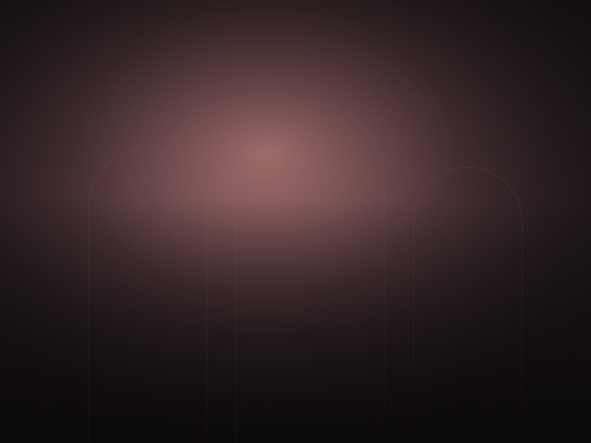
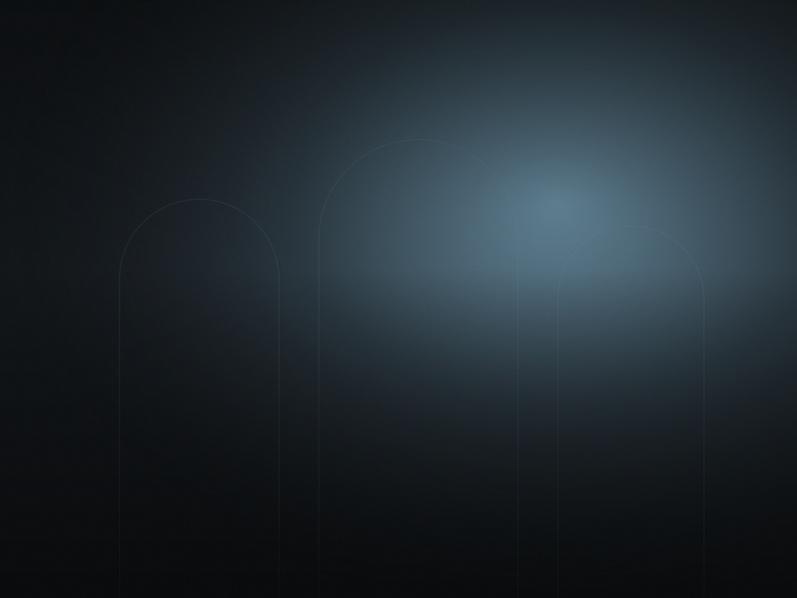
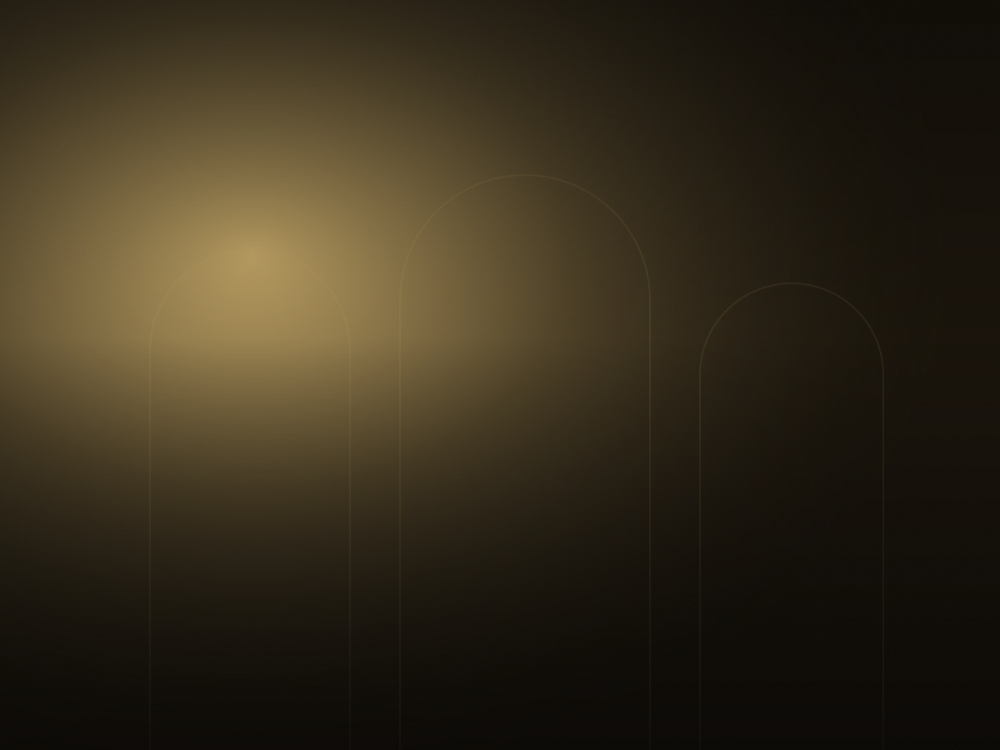
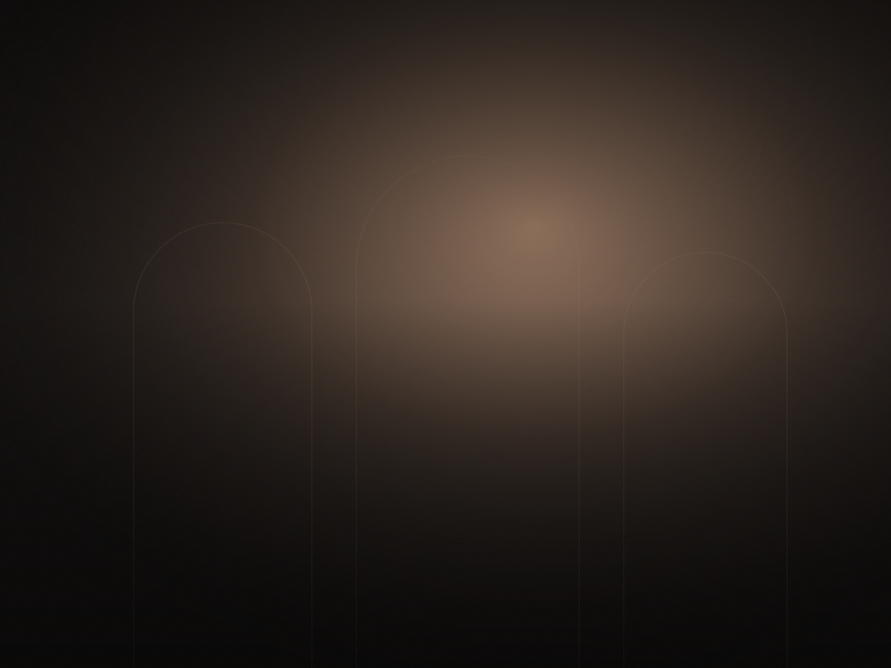

منذ 1998 · قلب المدينة القديمة
حين يصير
العشاء ذكرى
أطباق مغربية بروح معاصرة، تُحضَّر يوميًا من موسم السوق، وتُقدَّم في فناء أندلسي على ضوء الشموع.
عن المطعم
مطبخ يحترم أصله
ولا يخاف من الجديد
بدأت الحكاية بدار عائلية في المدينة القديمة، وبوصفات جدّة ظلّت تُنقل شفهيًا لثلاثة أجيال. اليوم نطبخها بالتقنية نفسها التي تعلّمناها، وبمكوّنات نختارها بأنفسنا من سوق الفلاحين كل صباح.
القائمة تتغيّر أربع مرات في السنة تبعًا للموسم، والخبز يُخبز في فرن الطين أمام الضيوف، والزيت من ضيعتنا في الحوز.
- قائمة موسمية تتجدّد كل ثلاثة أشهر
- خيارات نباتية وخالية من الغلوتين
- قاعة خاصة تتّسع لـ 30 ضيفًا للمناسبات

المعرض
لمحة من الدار






آراء الضيوف
ما يقوله من زارونا
«الطنجية هنا ليست طبقًا، بل درس في الصبر. حجزنا مرتين في أسبوع واحد.»
«نظّمنا عشاء عمل لـ 22 شخصًا في القاعة الخاصة. الخدمة كانت دقيقة إلى حدّ الدهشة.»
«المكان الوحيد الذي أخذت فيه ضيوفًا من الخارج ولم أضطر للاعتذار عن شيء.»
الحجز
احجز طاولتك
نستقبل الحجوزات حتى 30 يومًا مقدّمًا. للمجموعات فوق 8 أشخاص أو المناسبات الخاصة، اتصل بنا مباشرة على 0522 00 11 22.
- تأكيد الحجز خلال ساعتين برسالة قصيرة
- إلغاء مجاني حتى 4 ساعات قبل الموعد
- نحتفظ بالطاولة 15 دقيقة بعد الموعد
وصلنا طلبك
التواصل
تجدنا هنا
- العنوان
- 12 زنقة الياسمين، المدينة القديمة، الدار البيضاء
- الهاتف
- 0522 00 11 22
- البريد
- contact@example.com
- ساعات العمل
- الثلاثاء – الأحد، 19:00 – 00:30
الاثنين مغلق
تُستبدل هذه المساحة بخريطة تفاعلية في النسخة النهائية.